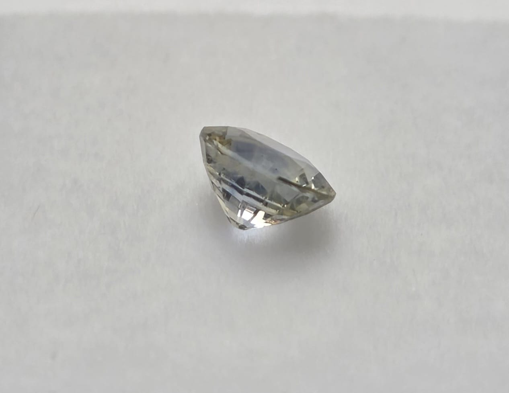
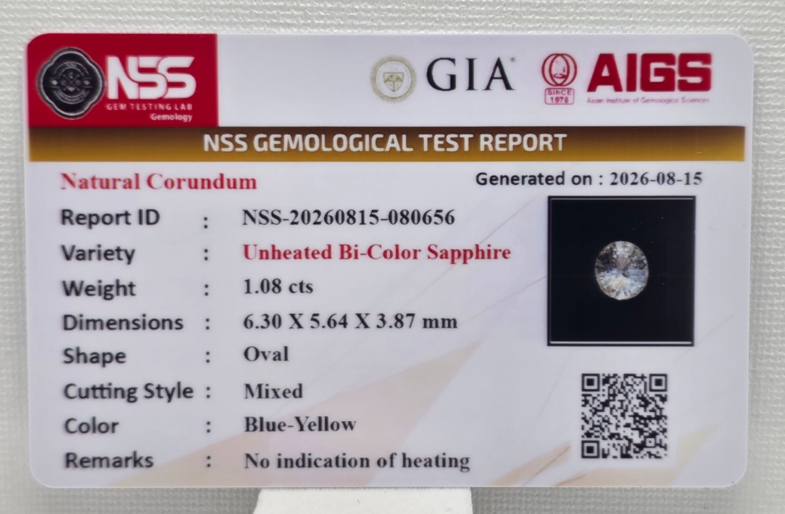

Bi-Color Sapphire
A natural bi-color sapphire featuring distinctive blue and yellow coloration.
Details
Weight: 1.08 ct
Shape: Oval
Color: Blue-Yellow
Dimensions: 6.30 × 5.64 × 3.87 mm
Ask About This Piece


A natural bi-color sapphire featuring distinctive blue and yellow coloration.
Weight: 1.08 ct
Shape: Oval
Color: Blue-Yellow
Dimensions: 6.30 × 5.64 × 3.87 mm
Ask About This Piece